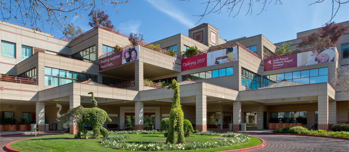
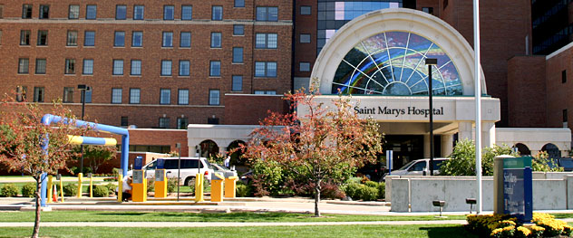

Addresses and phone numbers
Contact Mayo Hospital
Arizona-Scottsdale/Phoenix
Florida-Jacksonville
Minnesota-Rochester
Arizona-Scottsdale/Phoenix
Mayo hospital
13400E.Shea Blvd.
Scottsdale,AZ 85259
General number 480-301-8000
Appointment Office
480-301-1735
800-446-2279 (toll-free)
Insurance and billing
480-301-7033
800-603-0558 (toll-free outside Phoenix)
International Patients Center 480-301-7101
Medical records requests (Arizona patients only)
480-301-4211
Medical records requests fax for Arizona 480-301-9100
Florida-Jacksonville
Mayo hospital
4500 San Pablo Road
Jacksonville, FL 32224
General number 904-953-2000
Appointment Office 904-953-0853
Appointment Office fax 904-953-2898
Billing 904-953-7058
Hospital-to-hospitals patient transfers (Admission Transfer Center
— 24 hours a day) 904-953-1111
Insurance 904-953-2272
International Services 904-953-7000
International Services fax 904-953-7329
Medical records requests, Florida (fax) 904-953-2242
Radiology imaging records requests, Florida 904-953-7201
Minnesota-Rochester
Mayo hospital
200 First St. SW
Rochester, MN 55905
General number 507-284-2511
Appointment Office 507-538-3270
Insurance and billing
507-266-5670
800-660-4582 (toll-free)
International Appointment Office 507-284-8884
International Appointment Office Fax 507-538-7802
Medical records requests fax for Rochester 507-284-0161
click here to go to the top